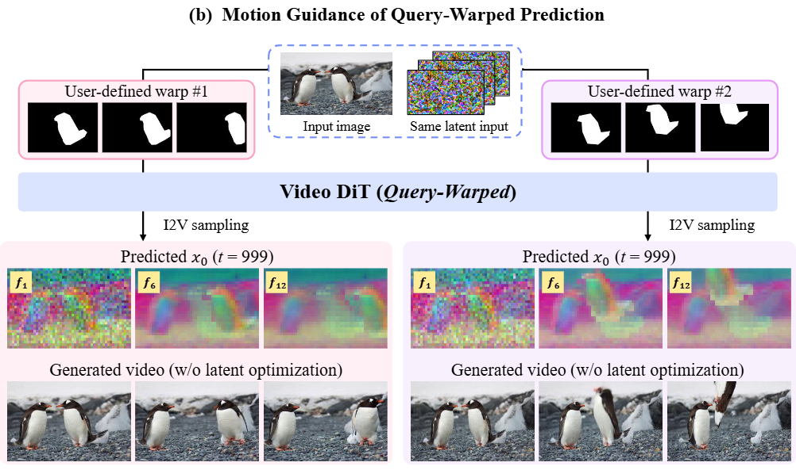
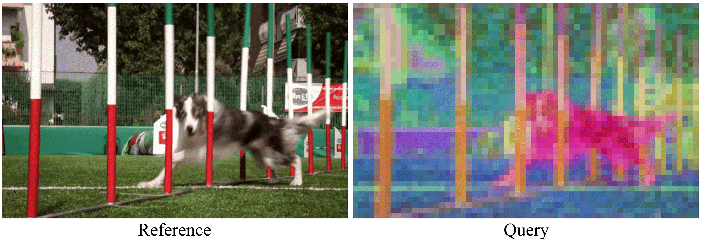
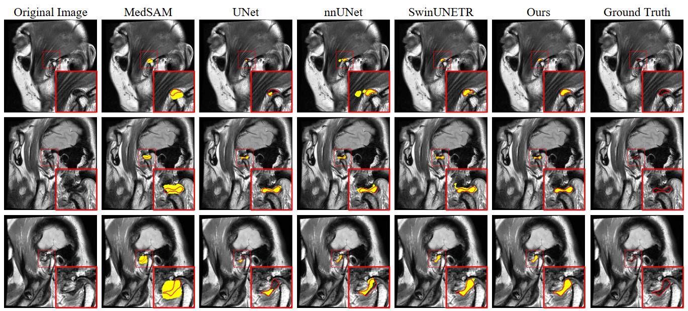
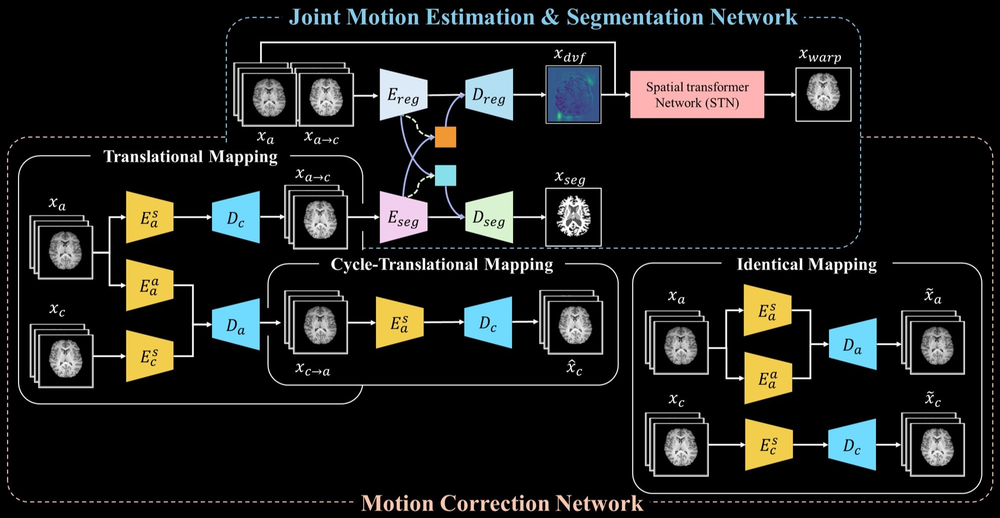

New! 🎉
- [2026.09] Started as a visiting scholar at UC Irvine, working with Prof. Alexander C. Berg on egocentric video generation.
- [2026.06] Two papers, “Controlling Motion Transfer in Diffusion Transformers via Attention Heads” and “QWERTY: Training-Free Motion Control via Query-Warped Video Diffusion Transformers”, were accepted to ECCV 2026! 🎉
- [2026.06] Our paper “Anatomically Consistent TMJ Disc Segmentation via Semantic Anchoring and Clinical Priors” was accepted to MICCAI 2026!
- [2025.09] Our paper “Interpreting Vision Transformers via Residual Replacement Model” was accepted to NeurIPS 2025!
- [2025.08] Initiated a research collaboration with Prof. Ming-Hsuan Yang (UC Merced & Google DeepMind) and RASCA FX.
- [2025.05] TESLA was accepted to MICCAI 2025 as an Oral presentation (Top 2.2%)! 🎉
Publications (* Equal Contribution)
Controlling Motion Transfer in Diffusion Transformers via Attention Heads
Sunyoung Jung*, Jiwoo Park*, Yoonseok Choi, Kyobin Choo, Ming-Hsuan Yang, Seong Jae Hwang
ECCV 2026

QWERTY: Training-Free Motion Control via Query-Warped Video Diffusion Transformers
Kyobin Choo, Youngmin Kim, Hyunkyung Han, Geunrip Park, Chanyoung Kim, Sunyoung Jung, Seong Jae Hwang
ECCV 2026
Query-Aligned Selective Injection for Mitigating Reference Bias in Motion Transfer
Sunyoung Jung*, Jiwoo Park*, Yeonkyung Lee, Tae Eun Choi, Woojung Han, Seong Jae Hwang
Under Review

AQUA: Aligned Query Fusion for Reference-Unbiased and Temporally Consistent Video Motion Transfer
Sunyoung Jung*, Jiwoo Park*, Yeonkyung Lee, Tae Eun Choi, Seong Jae Hwang
ICML 2026 Workshop — From Frames to Stories (F2S)

Anatomically Consistent TMJ Disc Segmentation via Semantic Anchoring and Clinical Priors
Dayun Ju, Chanyoung Kim, Sunyoung Jung, Hyo-Jung Jung, Chena Lee, Younjung Park, Seong Jae Hwang
MICCAI 2026

Interpreting Vision Transformers via Residual Replacement Model
Jinyeong Kim*, Junhyeok Kim*, Yumin Shim, Joohyeok Kim, Sunyoung Jung, Seong Jae Hwang
NeurIPS 2025

TESLA: Test-time Reference-free Through-plane Super-resolution for Multi-contrast Brain MRI
Yoonseok Choi, Sunyoung Jung, Mohammed A. Al-masni, Ming-Hsuan Yang, Dong-Hyun Kim
MICCAI 2025, Oral presentation, Top 2.2%

Deformation-Aware Segmentation Network Robust to Motion Artifacts for Brain Tissue Segmentation using Disentanglement Learning
Sunyoung Jung, Yoonseok Choi, Mohammed A. Al-masni, Minyoung Jung, Dong-Hyun Kim
MICCAI 2024
Awards and Honors
Merit-based Scholarship for Science and Engineering Doctoral Students, Korea, 2026
Seoul Future Foundation Scholarship, Korea, 2026
ICMRI Best Trainee Scientific Awards Poster Presentation (Gold), Korea, 2025
ISMRM 2024 Stipend, Korean Society of Magnetic Resonance in Medicine, Korea, 2024
Academic Achievement Award, Yonsei University, Korea, 2019
Academic Activities
Conference Reviewer
IEEE/CVF Conference on Computer Vision and Pattern Recognition (CVPR), 2026
European Conference on Computer Vision (ECCV), 2026
Neural Information Processing Systems (NeurIPS), 2026
Association for the Advancement of Artificial Intelligence (AAAI), 2026